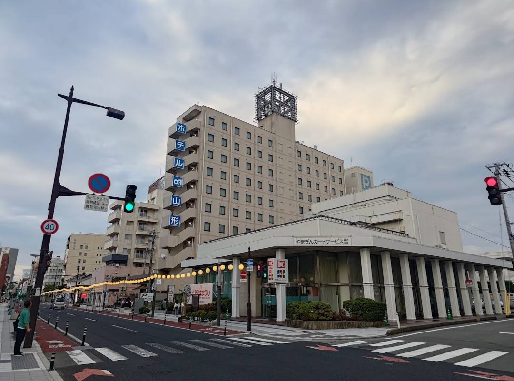
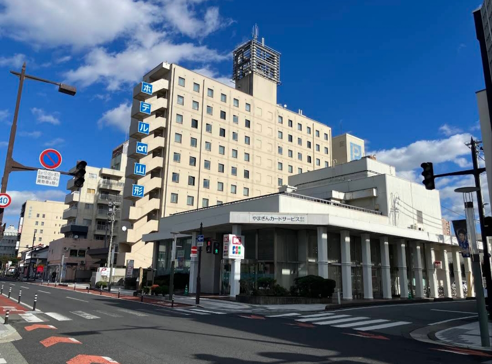

Lokasi
Saya berdomisili di kawasan Tōkamachi, Kota Yamagata, Jepang.
Gedung di Sekitar Lokasi

Lokasi ini berada di kawasan Tōkamachi, Kota Yamagata, Jepang.
Di sekitar lokasi terdapat berbagai bangunan komersial dan fasilitas perkotaan. Salah satu bangunan yang berada di kawasan ini adalah Hotel Alpha-One Yamagata.
Suasana Jalan

Kawasan sekitar lokasi memiliki suasana perkotaan dengan jalan utama, trotoar, bangunan komersial, serta berbagai fasilitas yang berada di sekitar jalan.
Area ini juga berada tidak jauh dari JR Yamagata Station sehingga cukup mudah dijangkau dengan berjalan kaki.
Google Maps
Lihat lokasi secara langsung melalui Google Maps.
🗺️ Buka Google Maps